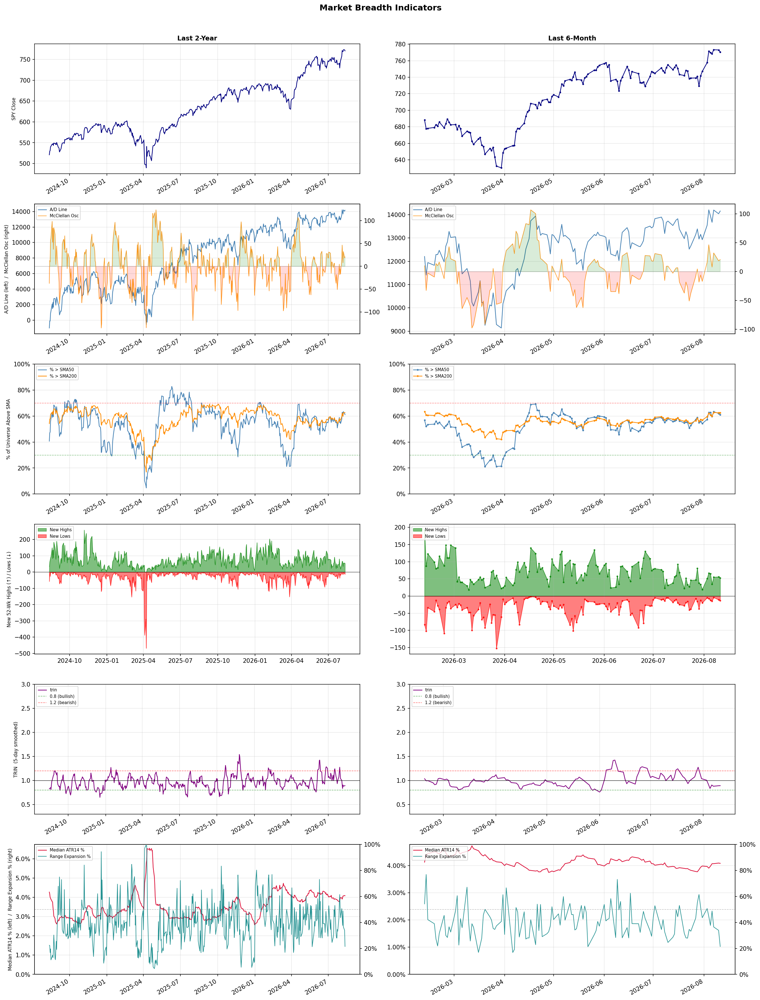

A daily market breadth and sector rotation report for active investors
| Item | Read |
|---|---|
| Regime | Risk-On |
| Risk posture | Selective |
| Universe | 1,334 stocks tracked · 53 new 52-week highs · 30 active swing setups |
| Breadth | 61.1% of tracked stocks are above SMA50, new highs exceed new lows (53 vs 13) |
| Leadership | Diagnostics & Research, Software - Application, and Medical Devices |
| Weakest groups | Chemicals, Solar, and Electrical Equipment & Parts |
Use this report to prioritize research and chart review; validate entries, stops, liquidity, earnings, and risk before acting.
| Item | Read |
|---|---|
| Primary read | Risk-On regime with Selective risk posture. |
| Research queue | TWST, WGS, NEO, ADPT, IQV |
| Leadership focus | Diagnostics & Research, Software - Application, and Medical Devices |
| Caution list | Chemicals, Solar, and Electrical Equipment & Parts |
| Review prompt | Check extension risk, chart location, fundamentals, valuation, and earnings before using any research row. |
| Item | Read |
|---|---|
| Primary read | 1 active risk warnings; use screen output as watchlist input only. |
| Bullish screens | AMPL, FSLY, DXCM, MPC, PSX |
| Bearish screens | LZ, SID, BAK |
| Alerts / levels | Automated trigger, stop, ATR, liquidity, reward/risk, and event-risk levels are pending future enrichment. |
| Review prompt | Open the linked chart, define trigger and invalidation, then check liquidity and event risk independently. |
Risk Posture: Selective — screen backdrop supports selective research in leading industries
Metric context: McClellan below -50 = elevated selling pressure; below -100 = washout territory. Range Expansion = share of stocks with daily range above their 20-day average. Signal Density = share of tracked names appearing in signal screens.
| Breadth Date | % > SMA50 | % > SMA200 | New Highs | New Lows | McClellan | Median Range | Avg Range | Median ATR14 | Range Expansion | Signal Density |
|---|---|---|---|---|---|---|---|---|---|---|
| 2026-08-11 | 61.1% | 62.6% | 53 | 13 | 20.8 | 2.9% | 3.6% | 4.1% | 21.5% | 2.5% |

Prior comparison date: August 10, 2026
| Metric | Prior | Current | Change |
|---|---|---|---|
| Regime | Risk-On | Risk-On | unchanged |
| Risk Posture | Selective | Selective | unchanged |
| % > SMA50 | 61.3% | 61.1% | -0.2 pts |
| % > SMA200 | 59.8% | 62.6% | +2.9 pts |
| New Highs | 52 | 53 | +1 |
| New Lows | 12 | 13 | -1 |
Top-10 industries entering: Asset Management and Medical Instruments & Supplies. Top-10 industries leaving: Medical Care Facilities and Software - Infrastructure. New multi-signal long setups: ABCL, ACAD, AEHR, AMPL, ASB, BAC, DXCM, EMR, ET. New multi-signal short setups: BAK.
| Status | Tickers | Read |
|---|---|---|
| Added | ABCL, ACAD, AEHR, AMPL, ASB, BAC, BAK, DXCM | New technical screen matches vs prior report. |
| Removed | ADPT, ARCC, BFLY, BOX, CMS, CRWD, ERO, ESRT | No longer present in today's technical screen matches. |
| Still Active | ABNB, BMRN, OGN | Appeared in both current and prior reports. |
| Promoted | none | Model Screen Score improved by at least 15 points. |
| Downgraded | none | Model Screen Score declined by at least 15 points. |
| Direction | Industry | ETF | Prior Rank | Current Rank | Days | Rank Change |
|---|---|---|---|---|---|---|
| Rose | Copper | COPX | 87 | 7 | 35 | +80 |
| Rose | Software - Application | IGV | 75 | 2 | 42 | +73 |
| Rose | Oil & Gas E&P | XOP | 84 | 19 | 42 | +65 |
| Rose | Gold | GDX | 88 | 26 | 42 | +62 |
| Rose | Asset Management | N/A | 72 | 10 | 42 | +62 |
Bull: Copper is experiencing a rise in relative strength primarily due to its critical role in the electrification and AI boom, as highlighted by headlines emphasizing its position as a "pick-and-shovel" play in the AI sector and its comparison to crude oil. The increasing demand for copper, driven by the transition to renewable energy and electric vehicles, is further underscored by reports on the best copper stocks for 2026 and the electrification squeeze, positioning copper as a vital commodity in the current economic landscape. Additionally, the recent performance of copper ETFs, such as COPX's impressive 115% gain, reflects strong investor sentiment and confidence in the sector's growth potential.
Bear: While the bullish case for copper hinges on its role in electrification and AI, it overlooks potential headwinds such as geopolitical risks, supply chain disruptions, and the cyclical nature of commodity markets that could dampen demand. Furthermore, the recent surge in prices may have been driven more by speculative trading rather than sustainable fundamentals, raising concerns about a potential correction as investors reassess the long-term viability of copper's growth narrative amidst economic uncertainties.
Verdict: Copper's rising demand is fundamentally driven by its essential role in the electrification of economies and the growing AI sector, which positions it as a critical commodity for future technologies. However, investors should remain cautious of potential headwinds such as geopolitical risks and supply chain disruptions that could impact demand and lead to a market correction, suggesting a need for careful monitoring of macroeconomic conditions and speculative trading influences.
Sources: Yahoo Finance, Google News
Bull: The Software - Application sector is experiencing a rise in relative strength primarily due to the robust performance of key players in the AI space, as evidenced by headlines highlighting significant gains in stocks like Palantir, UiPath, and C3.ai amid a broader rally in agentic AI stocks. Additionally, the overall positive sentiment in the tech sector, reflected in rising equity futures and strong tech results, suggests that investors are increasingly confident in the growth potential of software applications, particularly those leveraging AI technologies, which are expected to drive future demand and innovation.
Bear: While the recent performance of AI-related stocks like Palantir, UiPath, and C3.ai may appear promising, it is crucial to recognize that this rally could be driven more by speculative enthusiasm than sustainable fundamentals. The broader software sector is facing significant structural risks, including rising competition, regulatory scrutiny, and potential overvaluation, particularly as the market grapples with mixed economic signals and geopolitical tensions, such as stalled US-Iran talks and rising oil prices, which could dampen overall investor sentiment and spending in the tech space. Thus, the current relative strength may not reflect genuine long-term growth prospects but rather a temporary market reaction to hype around AI technologies.
Verdict: The Software - Application sector is likely rising due to heightened investor enthusiasm for AI technologies, driven by strong performance from key players and overall positive sentiment in the tech market. However, investors should remain cautious of the bear case, which highlights significant risks such as overvaluation, increasing competition, and regulatory challenges that could undermine long-term growth and lead to a market correction.
Sources: Yahoo Finance, Google News
Bull: The rising relative strength of the Oil & Gas Exploration & Production (E&P) sector, as indicated by the XOP ETF, is primarily driven by the recent surge in oil prices, which have topped $100 per barrel for the first time since May. This price increase is likely fueling investor optimism and driving up the stock prices of key players in the sector, such as Antero Resources and Magnolia Oil & Gas, as highlighted in recent headlines. Additionally, the tightening oil market, as referenced in reports about Canadian E&P stocks, suggests a favorable supply-demand dynamic that further supports the bullish outlook for the industry.
Bear: While the rising oil prices may initially seem bullish for the E&P sector, several underlying issues could undermine this optimism. First, the sustainability of oil prices above $100 is questionable, as geopolitical tensions and economic uncertainties could lead to volatility and potential declines. Additionally, the XOP ETF's limited holdings suggest a lack of diversification and exposure to the broader market risks, which could hinder long-term growth potential for investors in this sector.
Verdict: The recent surge in the Oil & Gas E&P sector, as indicated by the XOP ETF, is fundamentally driven by rising oil prices exceeding $100 per barrel, reflecting strong investor sentiment and a tightening supply-demand dynamic. However, investors should remain cautious of the key risk posed by geopolitical tensions and economic uncertainties that could jeopardize the sustainability of these price levels, potentially leading to volatility in the sector.
Sources: Yahoo Finance, Google News
Bull: The recent rise in gold's relative strength can be attributed to a combination of increasing gold prices and a sector rotation favoring gold mining stocks, as indicated by headlines such as "DUST Drops 13% as Gold Miners Rally Hard" and "Gold prices are breaking higher after a tough stretch." Additionally, the bullish sentiment surrounding gold is reinforced by the performance of leveraged ETFs like NUGT, which has jumped significantly alongside rising gold prices, suggesting strong investor confidence in the sector's potential for growth.
Bear: While the recent rise in gold prices and the performance of gold mining stocks may seem promising, several underlying factors could undermine this bullish sentiment. The potential for rising interest rates and a stronger dollar could dampen gold's appeal as a non-yielding asset, leading to decreased investor interest. Additionally, the rotation into gold mining stocks might be a short-term trend rather than a sustainable shift, especially as other sectors, such as technology, may regain investor favor, indicating that the current rally could be more speculative than fundamentally driven.
Verdict: The recent rise in gold prices and the rally in gold mining stocks can be fundamentally attributed to heightened investor demand for safe-haven assets amid economic uncertainty and inflationary pressures. However, a key risk to this bullish trend is the potential for rising interest rates and a stronger dollar, which could diminish gold's attractiveness as a non-yielding investment, leading to a possible correction in the market. Investors should closely monitor economic indicators and central bank policies to gauge the sustainability of this rally.
Sources: Yahoo Finance, Google News
Bull: The Asset Management industry is likely experiencing a rise in relative strength due to a flourishing investment environment highlighted by positive sentiment in recent headlines, such as "3 Investment Management Stocks to Buy From a Flourishing Industry." This suggests that investors are increasingly confident in the sector's growth potential, driven by strong performance in equity markets and the ongoing demand for diversified investment strategies. Additionally, while some firms face disruption fears from new AI tools, the overall resilience and adaptability of established asset managers position them favorably to capitalize on emerging trends, further enhancing their attractiveness to investors.
Bear: While the asset management industry may currently exhibit rising relative strength, the positive sentiment reflected in recent headlines may be misleading, as they often overlook the significant disruptions posed by emerging technologies, particularly AI. The fear of obsolescence among traditional wealth managers, as highlighted by Bloomberg, suggests that established firms may struggle to adapt quickly enough to maintain their competitive edge, potentially leading to a decline in market share and profitability. Moreover, the broader economic uncertainties and potential market corrections could undermine the current optimism, revealing vulnerabilities in the sector that investors should be cautious of.
Verdict: The asset management industry's rising relative strength is primarily driven by robust performance in equity markets and increasing investor confidence in diversified investment strategies. However, key risks remain, particularly the potential disruption from emerging AI technologies that could challenge traditional firms' competitive positioning and profitability. Investors should closely monitor how established asset managers adapt to these technological changes to gauge their long-term viability.
Sources: Google News
| Direction | Industry | ETF | Prior Rank | Current Rank | Days | Rank Change |
|---|---|---|---|---|---|---|
| Fell | REIT - Healthcare Facilities | XLRE | 5 | 77 | 14 | -72 |
| Fell | Healthcare Plans | IHF | 1 | 70 | 35 | -69 |
| Fell | Semiconductors | SOXX | 13 | 78 | 42 | -65 |
| Fell | Electrical Equipment & Parts | XLI | 27 | 86 | 42 | -59 |
| Fell | Gambling | N/A | 17 | 75 | 35 | -58 |
Bear: While the bull analyst attributes the weakness in healthcare REITs to broader market pressures and a shift in investor focus, it is crucial to recognize that the healthcare sector is facing fundamental challenges that extend beyond market sentiment. Rising interest rates not only increase borrowing costs but also heighten operational expenses for healthcare facilities, which could lead to squeezed margins and reduced profitability. Furthermore, demographic trends such as an aging population may not be sufficient to offset these financial pressures, raising concerns about the long-term sustainability of cash flows in the sector.
Bull: The relative weakness of the REIT - Healthcare Facilities sector can be attributed to broader market pressures, particularly the strength of financial stocks, as highlighted in multiple sector updates indicating their recent gains. This shift in investor focus towards financials may have led to a sell-off in healthcare REITs, as seen with American Healthcare REIT's 5.2% drop amid sector-wide selling. Additionally, the overall sentiment in the market appears to be favoring sectors perceived as more resilient in a rising interest rate environment, further impacting the relative strength of healthcare facilities REITs.
Verdict: The recent decline in the REIT - Healthcare Facilities sector can be fundamentally attributed to rising interest rates, which increase borrowing costs and operational expenses, thereby squeezing profit margins. While demographic trends like an aging population could support demand, the bear case highlights a significant risk: these financial pressures may undermine long-term cash flow sustainability, prompting investors to reassess the sector's viability. Investors should closely monitor interest rate movements and operational performance metrics to gauge the potential for further declines in this sector.
Sources: Yahoo Finance, Google News
Bear: While the bull analyst attributes the sector's relative weakness to profit-taking and short-term volatility, a more concerning underlying issue is the increasing regulatory scrutiny and potential policy changes that could impact profitability across the healthcare plans sector. Additionally, rising healthcare costs and inflationary pressures are straining margins, making it difficult for companies like UnitedHealth and Humana to maintain their growth trajectories, which could lead to more sustained underperformance in the coming quarters. This environment of uncertainty, coupled with mixed earnings results, suggests that the sector may face more significant challenges than just short-term fluctuations.
Bull: The relative weakness in the Healthcare Plans sector, as indicated by the falling trend against other industries, can largely be attributed to recent profit-taking after strong performances, such as UnitedHealth's pullback from its 52-week high. Additionally, mixed Q2 results and a cautious outlook from analysts, as highlighted in headlines discussing Humana and UnitedHealth, suggest that while the sector remains fundamentally sound, short-term volatility and uncertainty about future earnings growth may be causing investors to reassess their positions. This backdrop of cautious sentiment amidst ongoing innovation and defensive characteristics in healthcare could explain the current relative underperformance.
Verdict: The healthcare plans sector's recent underperformance is primarily driven by profit-taking following strong prior gains, alongside mixed earnings results and a cautious outlook from major players like UnitedHealth and Humana. However, a key risk to watch is the increasing regulatory scrutiny and rising healthcare costs, which could significantly impact profitability and growth trajectories, suggesting that investors should remain vigilant about potential long-term challenges in the sector.
Sources: Yahoo Finance, Google News
Bear: While the bull analyst attributes the recent decline in the semiconductor sector to profit-taking and temporary volatility, the reality is that the sector is facing significant structural headwinds, particularly from geopolitical uncertainties like Trump's polysilicon tariffs, which could disrupt supply chains and increase costs. Furthermore, the outflows from SOXX indicate a broader loss of investor confidence in the sector's long-term growth potential, suggesting that the recent uptick in stock prices may be more of a short-lived rebound rather than a sign of sustainable strength. This shift in investor sentiment could signal a more profound downturn as market participants reassess the sector's fundamentals amidst rising competition and potential regulatory challenges.
Bull: The recent decline in the relative strength of the semiconductor sector can be attributed to profit-taking as investors shift focus to other high-performing areas, such as the QQQ, as indicated by the headlines discussing outflows from SOXX and the sector's recent selloff. Additionally, the uncertainty surrounding Trump's polysilicon tariffs may be contributing to market volatility and investor caution, leading to a temporary dip in sentiment despite Cantor's upgraded outlook and the sector's recent 2% jump, which suggests underlying strength.
Verdict: The semiconductor sector's recent decline appears driven by profit-taking amid shifting investor focus, but it is crucial to recognize the significant risk posed by geopolitical uncertainties, particularly Trump's polysilicon tariffs, which could disrupt supply chains and elevate costs. Investors should remain cautious, as the current uptick in stock prices may not reflect sustainable growth, and a reassessment of the sector's fundamentals could lead to further declines. Monitoring regulatory developments and geopolitical tensions will be essential for making informed investment decisions in this space.
Sources: Yahoo Finance, Google News
Bear: While the bull analyst attributes the decline in the Electrical Equipment & Parts sector's relative strength to broader market concerns and geopolitical uncertainties, it is crucial to recognize that this sector is also facing fundamental challenges, such as rising raw material costs and supply chain disruptions that are not merely temporary. Additionally, the shift toward sustainability and renewable energy is creating a competitive landscape where companies that fail to innovate or adapt could be left behind, further exacerbating the sector's vulnerabilities and investor skepticism.
Bull: The Electrical Equipment & Parts sector is likely experiencing a decline in relative strength due to broader market concerns, as indicated by mixed equity futures and profit-taking in related sectors like semiconductors. Additionally, stalled geopolitical negotiations, such as the US-Iran talks, could be creating uncertainty that dampens investor sentiment, leading to a cautious approach towards sectors reliant on stable supply chains and economic growth. This environment may be prompting investors to favor sectors like technology (e.g., QQQ) over industrials, further impacting the relative strength of Electrical Equipment & Parts.
Verdict: The Electrical Equipment & Parts sector is likely experiencing a decline due to a combination of broader market uncertainties and fundamental challenges, including rising raw material costs and persistent supply chain disruptions. The shift towards sustainability and renewable energy further complicates the landscape, as companies that do not innovate risk losing market share. Investors should remain cautious, as these underlying issues could lead to prolonged weakness in the sector, making it essential to identify companies that are adapting effectively to these trends.
Sources: Yahoo Finance, Google News
Bear: While the bull analyst points to potential consolidation and analyst interest as signs of resilience, the reality is that increasing regulatory pressures and tax hikes are fundamentally eroding profit margins across the gambling sector. Furthermore, the falling relative strength trend suggests that investor sentiment is shifting towards caution, as the risks associated with regulatory changes and economic uncertainty could outweigh any potential benefits from consolidation or select stock picks. This environment raises significant concerns about the sustainability of growth in the gambling industry, making it a precarious investment choice.
Bull: The gambling industry is experiencing a decline in relative strength primarily due to increasing regulatory pressures and tax rises, as highlighted in the article from The Guardian. Additionally, the potential for consolidation within the sector, as suggested by the discussions around Caesars and other buyout prospects, may create uncertainty among investors, leading to a cautious sentiment reflected in stock performance. However, the continued interest from analysts in top gaming stocks, despite these headwinds, indicates underlying resilience and potential for recovery in the long term.
Verdict: The gambling industry's decline is fundamentally driven by escalating regulatory pressures and tax increases that are compressing profit margins, leading to cautious investor sentiment. While potential consolidation and interest in select gaming stocks may offer some glimmers of resilience, the key risk remains that ongoing regulatory changes and economic uncertainty could significantly hinder growth prospects, making it essential for investors to carefully assess their exposure in this volatile sector.
Sources: Google News
| Industry | Rank | ETF | 7d | 14d | 28d | 42d | Chg 42d | Size | 20D | 60D | Composite | Active Setups |
|---|---|---|---|---|---|---|---|---|---|---|---|---|
| Diagnostics & Research | 1 | N/A | 4 | 14 | 2 | 4 | +3 | 16 | 11.5% | 58.7% | 0.957 | 1 |
| Software - Application | 2 | IGV | 9 | 21 | 18 | 75 | +73 | 74 | 13.5% | 27.7% | 0.883 | 1 |
| Medical Devices | 3 | N/A | 10 | 33 | 32 | 32 | +29 | 20 | 12.3% | 25.8% | 0.873 | 2 |
| Health Information Services | 4 | N/A | 39 | 12 | 4 | 22 | +18 | 12 | 9.2% | 46.3% | 0.870 | 0 |
| Apparel Retail | 5 | XRT | 5 | 8 | 57 | 48 | +43 | 8 | 11.4% | 27.5% | 0.848 | 0 |
| Oil & Gas Refining & Marketing | 6 | CRAK | 1 | 1 | 3 | 60 | +54 | 7 | 4.5% | 23.8% | 0.840 | 0 |
| Copper | 7 | COPX | 18 | 67 | 82 | 80 | +73 | 6 | 19.2% | 4.7% | 0.807 | 0 |
| Travel Services | 8 | N/A | 6 | 15 | 21 | 19 | +11 | 10 | 7.0% | 19.4% | 0.806 | 0 |
| Medical Instruments & Supplies | 9 | N/A | 2 | 23 | 28 | 31 | +22 | 13 | 10.7% | 25.0% | 0.804 | 0 |
| Asset Management | 10 | N/A | 26 | 37 | 56 | 72 | +62 | 29 | 9.5% | 7.1% | 0.781 | 1 |
Rank columns (7d–42d) show the industry's rank that many trading days ago — lower is stronger. Chg 42d = rank change vs 42 trading days ago — positive means the industry moved up. 20D and 60D are the mean stock return within the industry over that period. Active Setups: count of today's swing-trade candidates from this industry appearing across all signal screens.
| Industry | Rank | ETF | 7d | 14d | 28d | 42d | Chg 42d | Size | 20D | 60D | Composite | Active Setups |
|---|---|---|---|---|---|---|---|---|---|---|---|---|
| Chemicals | 88 | N/A | 87 | 80 | 84 | 85 | -3 | 8 | -7.2% | -26.7% | 0.088 | 0 |
| Solar | 87 | TAN | 80 | 84 | 65 | 50 | -37 | 8 | -10.9% | -19.3% | 0.123 | 0 |
| Electrical Equipment & Parts | 86 | XLI | 84 | 85 | 61 | 27 | -59 | 12 | -5.8% | -22.5% | 0.184 | 0 |
| Grocery Stores | 85 | N/A | 83 | 79 | 75 | 67 | -18 | 5 | -2.9% | -3.9% | 0.187 | 0 |
| Footwear & Accessories | 84 | N/A | 71 | 34 | 40 | 65 | -19 | 5 | -9.8% | 5.5% | 0.195 | 0 |
| Utilities - Regulated Electric | 83 | XLU | 79 | 53 | 30 | 44 | -39 | 29 | -5.2% | -2.1% | 0.212 | 0 |
| Integrated Freight & Logistics | 82 | N/A | 65 | 54 | 33 | 43 | -39 | 7 | -7.5% | -0.9% | 0.215 | 0 |
| Utilities - Independent Power Producers | 81 | XLU | 88 | 83 | 55 | 74 | -7 | 5 | -4.4% | -8.2% | 0.235 | 0 |
| REIT - Diversified | 80 | N/A | 82 | 44 | 60 | 69 | -11 | 5 | -4.6% | -3.4% | 0.236 | 0 |
| Agricultural Inputs | 79 | N/A | 75 | 46 | 47 | 82 | +3 | 5 | -3.1% | -7.2% | 0.239 | 1 |
Rank columns (7d–42d) show the industry's rank that many trading days ago — lower is stronger. Chg 42d = rank change vs 42 trading days ago — positive means the industry moved up. 20D and 60D are the mean stock return within the industry over that period. Active Setups: count of today's swing-trade candidates from this industry appearing across all signal screens.
These are research candidates from top-ranked stocks, capped at five names per industry to avoid over-concentration. Returns shown (60D, 120D, 250D) are historical — they reflect where prices have already moved, not forward expectations. Extension Risk flags names that may require extra patience or a better entry point. They are not buy signals.
Chart: TV = TradingView chart (opens in browser); PDF = local chart file (if downloaded).
| Ticker | Name | Industry | Industry Rank | Market Cap | 60D Hist | 120D Hist | 250D Hist | Extension Risk | Research Reason | Chart |
|---|---|---|---|---|---|---|---|---|---|---|
| TWST | Twist Bioscience | Diagnostics & Research | 1 | N/A | 132.5% | 124.2% | 348.5% | Very extended | Top-ranked in industry; very extended | TV |
| WGS | GeneDx Holdings | Diagnostics & Research | 1 | N/A | 110.4% | -11.2% | -29.8% | Very extended | Top-ranked in industry; very extended | TV |
| NEO | NeoGenomics | Diagnostics & Research | 1 | N/A | 97.7% | 61.1% | 171.9% | Extended | Top-ranked in industry; extended | TV |
| ADPT | Adaptive Biotechnologies | Diagnostics & Research | 1 | N/A | 92.6% | 60.0% | 100.6% | Extended | Top-ranked in industry; extended | TV |
| IQV | IQVIA Holdings | Diagnostics & Research | 1 | N/A | 42.9% | 42.5% | 31.2% | Constructive | Top-ranked in industry | TV |
| NIQ | NIQ Global Intelligence | Software - Application | 2 | N/A | 102.2% | 45.6% | -5.5% | Very extended | Top-ranked in industry; very extended | TV |
| TEAM | Atlassian | Software - Application | 2 | N/A | 90.6% | 84.3% | -2.5% | Extended | Top-ranked in industry; extended | TV |
| CHYM | Chime Financial | Software - Application | 2 | N/A | 77.5% | 54.1% | 6.6% | Extended | Top-ranked in industry; extended | TV |
| RNG | RingCentral | Software - Application | 2 | N/A | 61.8% | 115.8% | 129.3% | Extended | Top-ranked in industry; extended | TV |
| U | Unity Software | Software - Application | 2 | N/A | 60.8% | 136.5% | 17.6% | Extended | Top-ranked in industry; extended | TV |
| BFLY | Butterfly Network | Medical Devices | 3 | N/A | 128.5% | 206.2% | 574.1% | Very extended | Top-ranked in industry; very extended | TV |
| TNDM | Tandem Diabetes Care | Medical Devices | 3 | N/A | 65.7% | 23.8% | 111.1% | Extended | Top-ranked in industry; extended | TV |
| DXCM | DexCom | Medical Devices | 3 | N/A | 54.8% | 23.0% | 11.7% | Extended | Top-ranked in industry; extended | TV |
| ABT | Abbott Laboratories | Medical Devices | 3 | N/A | 30.2% | -1.8% | -14.3% | Constructive | Top-ranked in industry | TV |
| BSX | Boston Scientific | Medical Devices | 3 | N/A | -4.4% | -32.9% | -50.1% | Lagging | Top-ranked in industry; lagging | TV |
| TXG | 10x Genomics | Health Information Services | 4 | N/A | 171.7% | 198.8% | 356.5% | Very extended | Top-ranked in industry; very extended | TV |
| CERT | Certara | Health Information Services | 4 | N/A | 76.4% | 24.5% | -24.4% | Extended | Top-ranked in industry; extended | TV |
| GDRX | GoodRx | Health Information Services | 4 | N/A | 52.6% | 59.7% | 8.6% | Extended | Top-ranked in industry; extended | TV |
| VEEV | Veeva Systems | Health Information Services | 4 | N/A | 51.4% | 30.5% | -14.1% | Extended | Top-ranked in industry; extended | TV |
| DOCS | Doximity | Health Information Services | 4 | N/A | 45.0% | 2.6% | -57.8% | Constructive | Top-ranked in industry | TV |
These are technical screen matches from existing signal files. They are not trade recommendations. Trigger, stop, ATR, liquidity, reward/risk, and event risk still require separate validation until those inputs are available.
Model Screen Score is weighted by signal count, industry rank, freshness, and setup type. It is not a probability of profit, expected return, or suitability rating. Industry cap: max 3 candidates per industry.
Signal glossary: Momentum Pullback = stock in an uptrend that has pulled back 10–30% and shows re-entry conditions. MA Compression = short- and long-term moving averages converging, often preceding a directional move. Three-Day Up/Down = three consecutive closes in the same direction. New 52Wk High/Low = price reached a new annual extreme.
Chart: TV = TradingView chart (opens in browser); PDF = local chart file (if downloaded).
| Ticker | Industry | Setups | Close | Industry Rank | Signal Count | Model Screen Score | Reason | Chart |
|---|---|---|---|---|---|---|---|---|
| AMPL | Software - Application | New 52Wk High; Three-Day Up | 12.69 | 2 | 2 | 100 | Multi-signal; top industry breakout | TV |
| FSLY | Software - Application | Momentum Pullback; Three-Day Up | 28.78 | 2 | 2 | 100 | Multi-signal; top industry pullback | TV |
| DXCM | Medical Devices | New 52Wk High; Three-Day Up | 89.53 | 3 | 2 | 100 | Multi-signal; top industry breakout | TV |
| MPC | Oil & Gas Refining & Marketing | New 52Wk High; Three-Day Up | 336.42 | 6 | 2 | 93 | Multi-signal; top industry breakout | TV |
| PSX | Oil & Gas Refining & Marketing | New 52Wk High; Three-Day Up | 224.36 | 6 | 2 | 93 | Multi-signal; top industry breakout | TV |
| VLO | Oil & Gas Refining & Marketing | New 52Wk High; Three-Day Up | 323.92 | 6 | 2 | 93 | Multi-signal; top industry breakout | TV |
| ABNB | Travel Services | New 52Wk High; Three-Day Up | 184.98 | 8 | 2 | 85 | Multi-signal; top industry breakout | TV |
| STT | Asset Management | New 52Wk High; Three-Day Up | 187.22 | 10 | 2 | 85 | Multi-signal; top industry breakout | TV |
| S | Software - Infrastructure | New 52Wk High; Three-Day Up | 22.46 | 12 | 2 | 85 | Multi-signal; new-high strength | TV |
| TWLO | Software - Infrastructure | New 52Wk High; Three-Day Up | 255.95 | 12 | 2 | 85 | Multi-signal; new-high strength | TV |
| ZETA | Software - Infrastructure | New 52Wk High; Three-Day Up | 29.15 | 12 | 2 | 85 | Multi-signal; new-high strength | TV |
| ABCL | Biotechnology | New 52Wk High; Three-Day Up | 9.76 | 13 | 2 | 85 | Multi-signal; new-high strength | TV |
| ACAD | Biotechnology | New 52Wk High; Three-Day Up | 29.41 | 13 | 2 | 85 | Multi-signal; new-high strength | TV |
| BMRN | Biotechnology | New 52Wk High; Three-Day Up | 69.55 | 13 | 2 | 85 | Multi-signal; new-high strength | TV |
| BAC | Banks - Diversified | New 52Wk High; Three-Day Up | 64.00 | 16 | 2 | 77 | Multi-signal; new-high strength | TV |
| JPM | Banks - Diversified | New 52Wk High; Three-Day Up | 362.04 | 16 | 2 | 77 | Multi-signal; new-high strength | TV |
| TEVA | Drug Manufacturers - Specialty & Generic | New 52Wk High; Three-Day Up | 36.48 | 17 | 2 | 77 | Multi-signal; new-high strength | TV |
| P | Computer Hardware | New 52Wk High; Three-Day Up | 109.38 | 18 | 2 | 77 | Multi-signal; new-high strength | TV |
| OXY | Oil & Gas E&P | Momentum Pullback; Three-Day Up | 59.06 | 19 | 2 | 77 | Multi-signal; pullback setup | TV |
| FAST | Industrial Distribution | New 52Wk High; Three-Day Up | 52.38 | 23 | 2 | 77 | Multi-signal; new-high strength | TV |
| OGN | Drug Manufacturers - General | New 52Wk High; Three-Day Up | 13.65 | 24 | 2 | 77 | Multi-signal; new-high strength | TV |
| ASB | Banks - Regional | New 52Wk High; Three-Day Up | 31.88 | 40 | 2 | 70 | Multi-signal; new-high strength | TV |
| TGT | Discount Stores | New 52Wk High; Three-Day Up | 152.29 | 42 | 2 | 65 | Multi-signal; new-high strength | TV |
| ET | Oil & Gas Midstream | New 52Wk High; Three-Day Up | 20.78 | 47 | 2 | 65 | Multi-signal; new-high strength | TV |
| AEHR | Semiconductor Equipment & Materials | New 52Wk High; Three-Day Up | 117.18 | 52 | 2 | 65 | Multi-signal; new-high strength | TV |
| EMR | Specialty Industrial Machinery | New 52Wk High; Three-Day Up | 164.38 | 59 | 2 | 65 | Multi-signal; new-high strength | TV |
| PSNL | Diagnostics & Research | Momentum Pullback | 14.02 | 1 | 1 | 65 | Single-signal; top industry pullback | TV |
Bearish setups — stocks making new lows or showing persistent downside patterns. Validate carefully before acting.
| Ticker | Industry | Setups | Close | Industry Rank | Signal Count | Model Screen Score | Reason | Chart |
|---|---|---|---|---|---|---|---|---|
| LZ | Specialty Business Services | New 52Wk Low; Three-Day Down | 5.44 | 21 | 2 | 47 | Multi-signal; new-low weakness | TV |
| SID | Steel | New 52Wk Low; Three-Day Down | 0.87 | 34 | 2 | 40 | Multi-signal; new-low weakness | TV |
| BAK | Chemicals | New 52Wk Low; Three-Day Down | 2.21 | 88 | 2 | 15 | Multi-signal; new-low weakness | TV |
How To Use This Report
| Use | Purpose |
|---|---|
| Market map | Start with breadth, regime, risk warnings, and what changed since the prior report. |
| Industry scan | Use leading, deteriorating, rising, and declining industries to focus research. |
| Research queue | Treat long-term candidates as names for deeper fundamental, valuation, and chart review. |
| Technical review | Treat bullish and bearish screen matches as watchlist inputs that require independent trigger, stop, liquidity, and event-risk checks. |
| Source follow-up | Use chart links and source files to verify raw inputs before relying on any row. |
What This Report Is Not
| Not | Meaning |
|---|---|
| Investment advice | The report does not evaluate personal objectives, risk tolerance, tax situation, account type, or suitability. |
| Buy/sell recommendation | Named tickers are research candidates or screen matches, not recommendations to transact. |
| Price target | The report does not provide fair value estimates, targets, or expected returns. |
| Trade plan | Trigger, stop, sizing, reward/risk, liquidity, and event-risk review remain separate user work. |
| Performance claim | Model Screen Score is not validated historical performance or a forecast of future results. |
| Item | Note |
|---|---|
| Version | Daily Report Methodology v1 |
| Model Screen Score | Screen-fit rank based on signal count, industry rank, freshness, and setup type. |
| Not predictive proof | The score is not expected return, probability of profit, historical validation, or suitability analysis. |
| Industry ranks | Composite industry ranks use existing daily ranking outputs and historical rank columns when available. |
| Research candidates | Long-term rows are research candidates from ranked stocks and leading industries, with historical returns labeled as historical only. |
| Technical matches | Bullish and bearish rows are screen matches requiring independent chart, trigger, stop, liquidity, and event-risk review. |
| Source | Status | Rows | Path |
|---|---|---|---|
| Market breadth | present | 1253 | breadth_20260811.csv |
| Industry composite rankings | present | 88 | all_industry_composite_20260811.csv |
| Top ranked stocks | present | 195 | top_ranked_composite_20260811.csv |
| All ranked stocks | present | 1334 | all_stocks_composite_sorted_20260811.csv |
| Top momentum pullbacks | present | 1482 | top_momentum_pullbacks_20260811.csv |
| MA compression | present | 1482 | ma_compression_stocks_20260811.csv |
| Three-day up/down | present | 249 | three_day_up_down_stocks_20260811.csv |
| New 52-week members | present | 66 | breadth_new_52wk_members_20260811.csv |
This report is generated from automated technical screens and is for informational and research purposes only. It is not investment advice, a solicitation, or a recommendation to buy or sell any security. Past performance is not indicative of future results. You are solely responsible for your own investment decisions. Consult a licensed financial advisor before acting on any information herein.